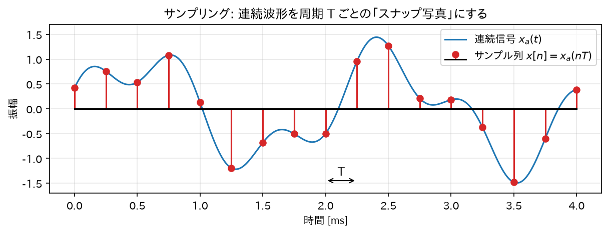
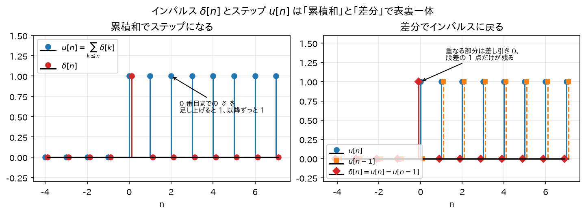
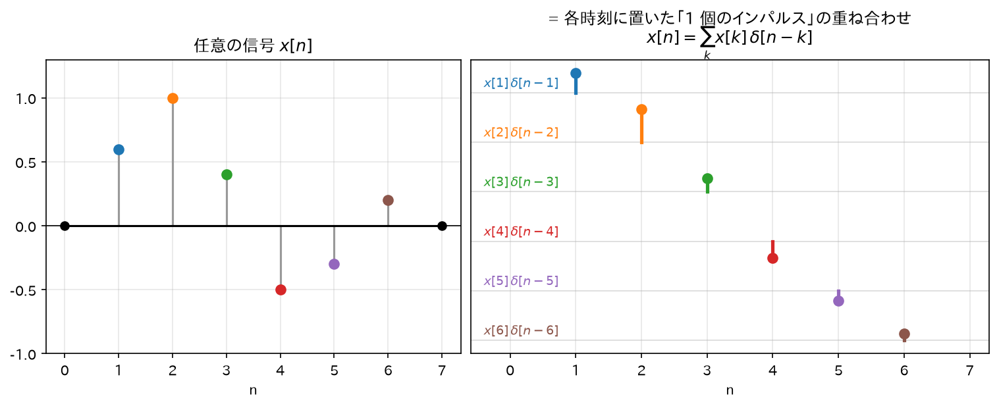
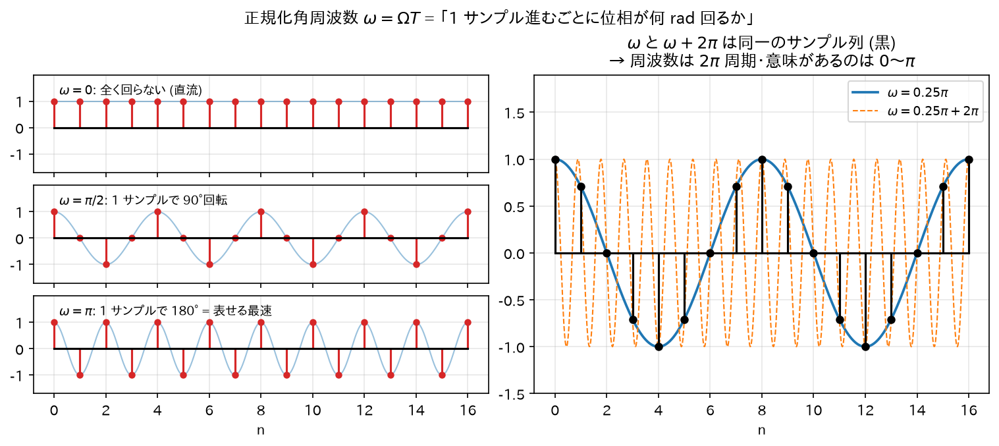
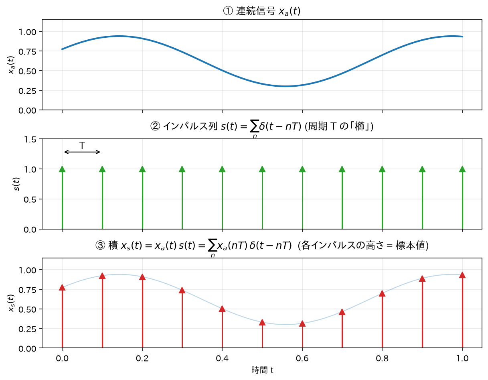
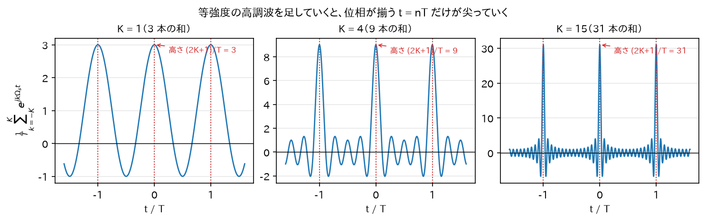
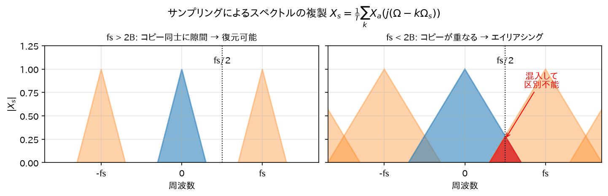
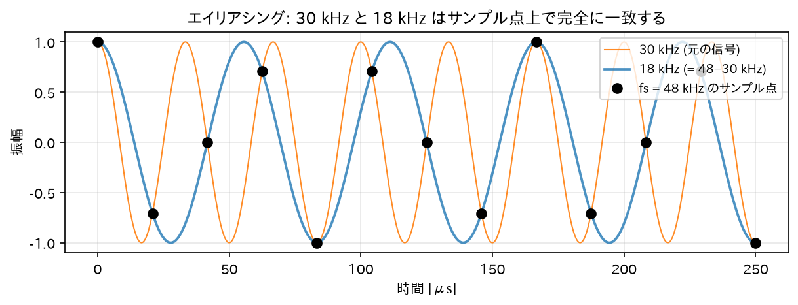

Chapter 01
離散時間信号とサンプリング
1. 離散時間信号とは
直感
マイクで音を録るとき、空気の振動（連続的な波）を一定間隔でパシャパシャと「スナップ写真」に撮って数値の列にする。 この数値の列が離散時間信号である。
- \(x_a(t)\): 元のアナログ（連続時間）信号
- \(T\): サンプリング周期 [s]
- \(f_s = 1/T\): サンプリング周波数 [Hz]（例: CD なら 44100 Hz）
離散時間信号は「\(T\)秒ごとの値だけを覚えた数列」であり、サンプル同士の間の時刻には値が存在しない。

重要な基本信号
単位インパルス（デルタ）信号 — 離散信号処理で最も重要な信号:
直感: 「時刻 0 に一発だけ叩く」信号。太鼓を一回だけポンと叩くイメージ。 連続時間のディラックのデルタ関数と違い、離散版は単なる「高さ 1 の 1 サンプル」なので数学的に何も難しくない。
単位ステップ信号:
直感: 「時刻 0 でスイッチを入れてそのまま」。
両者の関係の導出:
\(\delta[n]\)を時刻 0 まで足し合わせるとステップになる:
確認:\(n < 0\)のとき、和の範囲に\(k=0\)が含まれないのですべての項が 0、よって\(u[n]=0\)。 \(n \geq 0\)のとき、\(k=0\)の項だけが 1 で他は 0、よって\(u[n]=1\)。定義と一致する。∎
逆に、ステップの「差分」がインパルスになる:
確認:\(n=0\)で\(u[0]-u[-1] = 1-0 = 1\)。\(n\geq 1\)で\(1-1=0\)。\(n\leq -1\)で\(0-0=0\)。∎

なぜこの 2 つが「基本信号」なのか（存在意義）。
- \(\delta[n]\) はシステムの指紋を測るプローブ。中身のわからないフィルタに一発だけ叩き込むと、返ってくる応答 \(h[n]\)（インパルス応答）が、そのフィルタの挙動を完全に決める（03 章で証明）。
- \(u[n]\) はもう一方の基本入力「スイッチを入れっぱなし」。立ち上がりの過渡応答（整定の様子）を見るのに使う、実務のもう一つの標準プローブ。
- \(u=\sum\delta\)、\(\delta=u-u[n-1]\) という和／差の対応は、連続系の積分 \(\int\) と微分 \(d/dt\) の離散版。この対はこの先くり返し効いてくる。
任意の信号のインパルスによる分解（後の畳み込みの導出で使う超重要式）:
導出:\(\delta[n-k]\)は\(n=k\)のときだけ 1、それ以外は 0。 したがって右辺の無限和のうち生き残るのは\(k=n\)の項だけで、その値は\(x[n] \cdot 1 = x[n]\)。左辺と一致する。∎
直感: どんな信号も「各時刻に置かれた、高さの違うインパルスの列」として見なせる、ということ。 レゴブロックを 1 個ずつ並べて任意の形を作るのと同じで、\(\delta\)が「ブロック 1 個」に相当する。

この分解は何のためにやるのか（存在意義）。 ねらいはただ 1 つ、「たった 1 回の測定 \(h[n]\) から、あらゆる入力への出力を計算できるようにする」こと。次の 4 ステップでつながる:
- どんな入力も \(\sum_k x[k]\delta[n-k]\) と「インパルスの寄せ集め」に分解できる（＝この式）
- 1 発 \(\delta[n]\) の応答は指紋 \(h[n]\)（インパルス応答の定義）
- 時不変性より、\(k\) だけ遅れた \(\delta[n-k]\) の応答は \(h[n-k]\)
- 線形性より全部足し合わせて、出力 \(= \sum_k x[k]h[n-k]\) = 畳み込み
つまりこの分解は「指紋 \(h[n]\) を全入力に使い回すための橋渡し」である。これが無ければ \(h[n]\) を測っても宝の持ち腐れ、逆にこれがあるおかげで 03 章以降のフィルタ理論すべてが 1 本の \(h[n]\) の上に乗る。鐘を一度叩いた "ゴーン"（\(h[n]\)）さえ録っておけば、どんな連打の音も「遅らせて音量を変えた "ゴーン" の足し算」で予測できる——その「叩きの寄せ集め」という見方が、まさにこの式である。（4 ステップの数式化が 03 章の畳み込み。）
2. 正規化周波数
離散信号の世界では、時間の単位が「秒」ではなく「サンプル」になる。そこで周波数も正規化する。
アナログの正弦波\(\cos(\Omega t) = \cos(2\pi f t)\)を周期\(T\)でサンプリングすると:
ここで
を正規化角周波数と呼ぶ。
直感:\(\omega\)は「1 サンプル進むごとに位相が何ラジアン回るか」。
- \(\omega = 0\): 直流（全く回らない）
- \(\omega = \pi\): 1 サンプルごとに半回転 = 表現できる最高の速さ（後述のナイキスト周波数\(f_s/2\)に対応）
- \(\omega = 2\pi\): 1 サンプルごとに 1 回転 = サンプル点上では直流と区別がつかない
最後の点が本質的で、離散信号の周波数は\(2\pi\)周期でしか意味を持たない。実際、任意の整数\(m\)に対して
（\(mn\)は整数なので\(2\pi m n\)は位相として一周の整数倍、よって消える）。∎

3. サンプリング定理とエイリアシング
直感
回転するタイヤをビデオで撮ると、逆回転して見えることがある（ワゴンホイール効果）。 これは「撮影のコマ間隔に対してタイヤが速く回りすぎて、遅い回転と区別がつかなくなる」現象で、 サンプリングにおけるエイリアシング（折り返し歪み）そのものである。
インパルス列によるサンプリングのモデル化
サンプリングを数式で扱うため、連続信号\(x_a(t)\)に周期\(T\)のインパルス列
を掛けたもの（\(\delta(\cdot)\)はディラックのデルタ関数）をサンプリング済み信号とみなす:
（デルタ関数の性質\(x_a(t)\delta(t-nT) = x_a(nT)\delta(t-nT)\)を使った。デルタは\(t=nT\)でしか「生きて」いないので、掛ける関数はその点の値だけが効く。）

インパルス列のフーリエ級数展開（導出）
この節の作戦. 知りたいのは標本化後の信号\(x_s(t) = x_a(t)s(t)\)のスペクトル。 ところが「時間領域の掛け算」のままではフーリエ変換の定義式に入れても手が動かない。そこで一計を案じる:
トゲの列\(s(t)\)を、もし回転成分\(e^{jk\Omega_s t}\)の和に書き直せたら—— \(x_s = x_a \times (\text{回転成分の和}) = \sum_k (x_a \times \text{回転成分})\)とバラせて、 各項は「\(x_a\)に\(e^{jk\Omega_s t}\)を掛けたもの」= スペクトルを\(k\Omega_s\)だけ平行移動したものになる（次節で確認する）。 つまり「掛け算」という難物が「スペクトルのコピーを並べる」という絵に化ける。
この節の目標はその前半、「\(s(t)\)を複素指数の和で表すこと」だけ。それを可能にする道具がフーリエ級数である。
フーリエ級数とは（最小限の導入）. 周期\(T\)で同じ形を繰り返す関数は、 「周期\(T\)の中にちょうど整数回収まる回転成分」——基本波\(e^{j\Omega_s t}\)（\(\Omega_s = \frac{2\pi}{T}\)、1 周期で 1 回転）と その高調波\(e^{jk\Omega_s t}\)（1 周期で\(k\)回転）——の重ね合わせで書ける、というのがフーリエ級数の主張:
部品がこの形に限られる理由は素直で、周期\(T\)の関数を作れるのは周期\(T\)を割り切る回転成分だけだから （半端な回転数の成分を混ぜると 1 周期後に同じ形に戻れない）。 未知なのは各成分の重み\(c_k\)である。
係数公式の導出（直交性で釣り上げる）. 重み\(c_k\)は次の事実で取り出せる。整数\(l\)に対して回転成分を 1 周期分積分すると:
（\(e^{\pm j l \pi} = (-1)^l\)で分子が消える。\(l = 0\)なら被積分関数は 1 で積分は\(T\)。） つまり回転成分は 1 周期でちょうど整数周して打ち消し合い、回らない成分（\(l=0\)）だけが生き残る。 この性質を使い、上の級数の両辺に\(e^{-j m \Omega_s t}\)を掛けて 1 周期積分すると:
（右辺の積分は\(k = m\)の項だけが\(T\)、他はすべて 0。狙った周波数の成分だけを逆回転で「静止」させて釣り上げる操作で、04 章の DTFT と全く同じ発想。）よって:
これが教科書で「フーリエ係数の公式」と呼ばれるものの正体である。
インパルス列に適用する. 積分区間\([-T/2, T/2]\)の中にあるインパルスは\(t=0\)の\(\delta(t)\)一本だけ。デルタ関数の抜き出し性質 \(\int \delta(t) g(t) dt = g(0)\)より:
すなわちすべての係数が等しく\(1/T\):
「滑らかな波を足してトゲ?」の確認. にわかには信じがたい式だが、途中まで実際に足してみると納得できる:

直感: 時間軸で「等間隔のトゲの列」は、周波数軸では「等間隔（\(\Omega_s\)おき）の成分がすべて同じ強さ\(\frac{1}{T}\)で並んだもの」。 この「等強度の高調波の和」という表現を\(x_s = x_a s\)に代入するのが次節である。
サンプリングされた信号のスペクトル（導出）
\(x_a(t)\)のフーリエ変換を\(X_a(j\Omega) = \int_{-\infty}^{\infty} x_a(t) e^{-j\Omega t} dt\)とする。 \(x_s(t)\)のフーリエ変換を計算する:
和と積分を入れ替えて:
（積分の中身は「周波数を\(\Omega - k\Omega_s\)に置き換えたフーリエ変換の定義式」そのものである。）
この式の意味（最重要の直感）
サンプリングすると、元のスペクトル\(X_a\)のコピーが\(\Omega_s = 2\pi f_s\)おきに無限に並ぶ。
- 元の信号の最高周波数を\(B\)とすると、コピー同士が重ならない条件は $$ f_s - B > B \quad \Longleftrightarrow \quad f_s > 2B $$ これがサンプリング定理（ナイキスト・シャノンの定理）: 「信号の最高周波数の 2 倍より速くサンプリングすれば、元の信号は完全に復元できる」。
- コピーが重なると、隣のコピーの成分が混入して元と区別できなくなる。これがエイリアシング。 周波数\(f > f_s/2\)の成分は\(f_s - f\)の位置に「折り返して」現れる。

エイリアシングの周波数を具体的に導出
周波数\(f_0\)（ただし\(f_s/2 < f_0 < f_s\)）の正弦波\(\cos(2\pi f_0 t)\)をサンプリングする:
ここで\(f_1 = f_s - f_0\)（これは\(0 < f_1 < f_s/2\)を満たす）とおくと\(f_0 = f_s - f_1\)なので:
\(2\pi n\)は一周の整数倍だから位相として消え、さらに\(\cos(-\theta)=\cos\theta\)より:
つまり \(f_0\)の正弦波のサンプル列は、\(f_s - f_0\)の正弦波のサンプル列と完全に同一。∎
例:\(f_s = 48\)kHz で 30 kHz の音をサンプリングすると、\(48-30 = 18\)kHz の音と区別がつかない。 だから A/D 変換の前には必ずアナログのローパスフィルタ（アンチエイリアシングフィルタ）を入れる。

4. まとめ — IIR とのつながり
- IIR フィルタは離散時間信号\(x[n]\)を入力にとる。すべての議論は「サンプル列」の上で行われる。
- IIR フィルタの周波数特性は正規化周波数\(\omega \in [0, \pi]\)（実周波数\(0\)〜\(f_s/2\)）の範囲で設計する。
- 次章では、周波数を扱うための数学的道具である複素指数関数を固める。